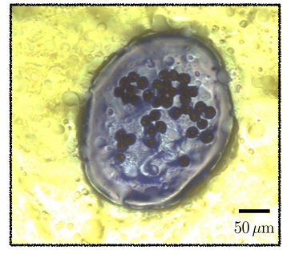
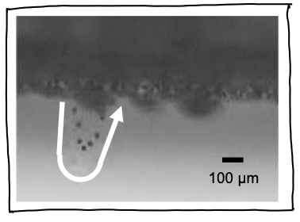

Ranit Mukherjee
Soft Matter, Experimental
Prologue
Through experiments on droplets, frost, fluid interfaces, and non-Brownian particles, I try to understand how simple physical interactions drive complex phenomena in nature and engineering applications. My goal is to design analogs of complex natural systems and processes and probe them for fundamental physical understanding.
I have a PhD in Engineering Mechanics from Virginia Tech, Blacksburg, USA with Prof. Jonathan Boreyko and a postdoctoral experience with Prof. Sungyon Lee at the University of Minnesota, Twin Cities, USA.
My research draws inspiration from technological challenges, biological systems, and ecological questions. I work with collaborators across disciplines, from plant pathologists uncovering how jumping dew droplets spread disease to engineers at Rolls-Royce developing new de-icing strategies. Explore the Research Stories below to see how these collaborations come to life.
Background at a glance
Research Stories
Stretching the fingers: Effects of particles in Saffman-Taylor Instability
Published in Soft Matter, September 2025
What could a deadly wheat disease possibly have in common with jumping-droplet condensation? Quite a lot, as it turns out. Working with plant pathologists at Virginia Tech, we studied wheat leaves infected with Puccinia triticina, the fungus responsible for devastating leaf rust. Surprisingly, as these leaves are naturally superhydrophobic, dew droplets can jump off them (see the video below), carrying fungal spores along for the rideBoreyko et al., J. Royal Soc. Interface, 2019.
A spore-laden droplet on a water-sensitive paper. To mimic a field transmission event in the lab, we attached an infected leaf to a Peltier stage to induce condensation. Then the leaf was surrounded with water-sensitive papers placed at different angles, emulating real crop conditions. Each time a jumped droplet landed, it left a blue mark on one of the papers in the array, allowing us to map how far and in what directions droplets could travel, along with a lower bound for the amount of droplet-laden spores being carried by wind. The results revealed that with the gentlest of breezes, natural dew cycles can enable passive dispersal of pathogens. In other words, the same physics that makes droplets jump in engineered condensers may also help spread plant epidemics.
The physics of phase change in granular rafts
Published in Physics of Fluids, August 2025 andFebruary 2023
What could a deadly wheat disease possibly have in common with jumping-droplet condensation? Quite a lot, as it turns out. Working with plant pathologists at Virginia Tech, we studied wheat leaves infected with Puccinia triticina, the fungus responsible for devastating leaf rust. Surprisingly, as these leaves are naturally superhydrophobic, dew droplets can jump off them (see the video below), carrying fungal spores along for the rideBoreyko et al., J. Royal Soc. Interface, 2019.
A spore-laden droplet on a water-sensitive paper. To mimic a field transmission event in the lab, we attached an infected leaf to a Peltier stage to induce condensation. Then the leaf was surrounded with water-sensitive papers placed at different angles, emulating real crop conditions. Each time a jumped droplet landed, it left a blue mark on one of the papers in the array, allowing us to map how far and in what directions droplets could travel, along with a lower bound for the amount of droplet-laden spores being carried by wind. The results revealed that with the gentlest of breezes, natural dew cycles can enable passive dispersal of pathogens. In other words, the same physics that makes droplets jump in engineered condensers may also help spread plant epidemics.
Lift off and crashing back: The surprising end of jumping-droplet condensation
Published in Joule, May 2019
In any heat transfer devices, the condenser surface inevitably becomes covered with tiny water droplets. Removing this water is an engineering design challenge as they block efficient heat transfer. On ordinary metal surfaces, these droplets merge and eventually grow large enough to roll off under gravity, but only if the surface is at an angle other than horizontal. Superhydrophobic surfaces offer a clever alternative: their extremely low adhesion allows the excess surface energy released during merging to be converted into a out-of-plane velocity. This is the basis of jumping-droplet condensation, one of most efficient modes of condensation Wang et al., Nano Letters, 2012 discovered to date.
Jumped droplets may return on an upside down surface, being caught in the incoming vapor stream.Yet, real surfaces are never perfect. Defects can pin droplets, slowing their departure and leading to flooding when the return of fallen droplets exceeds the rate of jumping. Even upside-down surfaces can show the surprising return of droplets, driven by vapor flow entrainment near the surface. Our experiments reveal that, over longer condensation periods (3 hours or more), tilted surfaces consistently outperform horizontal ones, where gravity lends a hand in clearing droplets and sustaining efficient heat transfer.

Plant pathogens piggybacking on jumped droplets
Published in Proceedings of the National Academy of Sciences, August 2021
What could a deadly wheat disease possibly have in common with jumping-droplet condensation? Quite a lot, as it turns out. Working with plant pathologists at Virginia Tech, we studied wheat leaves infected with Puccinia triticina, the fungus responsible for devastating leaf rust. Surprisingly, as these leaves are naturally superhydrophobic, dew droplets can jump off them (see the video below), carrying fungal spores along for the rideBoreyko et al., J. Royal Soc. Interface, 2019.
A spore-laden droplet on a water-sensitive paper. To mimic a field transmission event in the lab, we attached an infected leaf to a Peltier stage to induce condensation. Then the leaf was surrounded with water-sensitive papers placed at different angles, emulating real crop conditions. Each time a jumped droplet landed, it left a blue mark on one of the papers in the array, allowing us to map how far and in what directions droplets could travel, along with a lower bound for the amount of droplet-laden spores being carried by wind. The results revealed that with the gentlest of breezes, natural dew cycles can enable passive dispersal of pathogens. In other words, the same physics that makes droplets jump in engineered condensers may also help spread plant epidemics.
Another jumping event, this time with frost
Published in ACS Nano, February 2021
What could a deadly wheat disease possibly have in common with jumping-droplet condensation? Quite a lot, as it turns out. Working with plant pathologists at Virginia Tech, we studied wheat leaves infected with Puccinia triticina, the fungus responsible for devastating leaf rust. Surprisingly, as these leaves are naturally superhydrophobic, dew droplets can jump off them (see the video below), carrying fungal spores along for the rideBoreyko et al., J. Royal Soc. Interface, 2019.
A spore-laden droplet on a water-sensitive paper. To mimic a field transmission event in the lab, we attached an infected leaf to a Peltier stage to induce condensation. Then the leaf was surrounded with water-sensitive papers placed at different angles, emulating real crop conditions. Each time a jumped droplet landed, it left a blue mark on one of the papers in the array, allowing us to map how far and in what directions droplets could travel, along with a lower bound for the amount of droplet-laden spores being carried by wind. The results revealed that with the gentlest of breezes, natural dew cycles can enable passive dispersal of pathogens. In other words, the same physics that makes droplets jump in engineered condensers may also help spread plant epidemics.
Epilogue
I am looking for a faculty role. In my independent program, I will take a deep dive into patterns in the natural world. We will design physical analogs for soil, cells, and tissues, utilizing my experience with granular materials, interfacial fluid mechanics, phase change processes, and years of experimental insights.
Connect with me through email, mranit33 at vt.edu